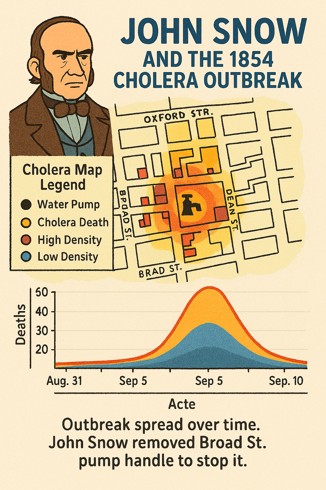
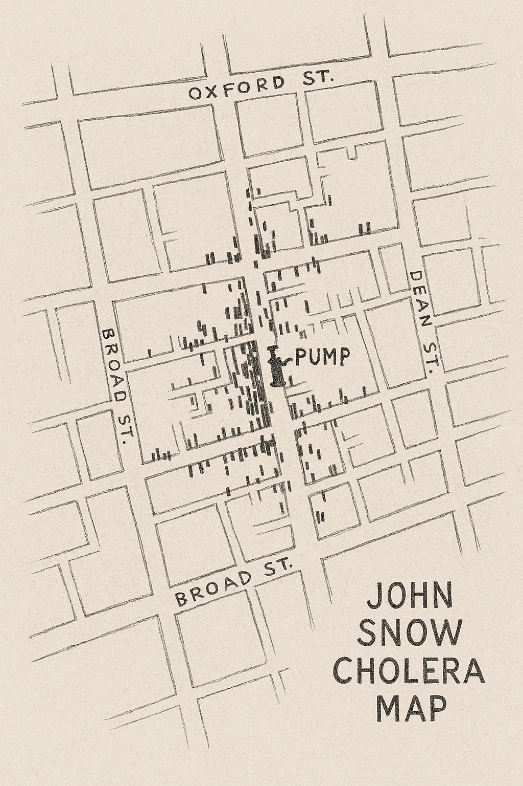
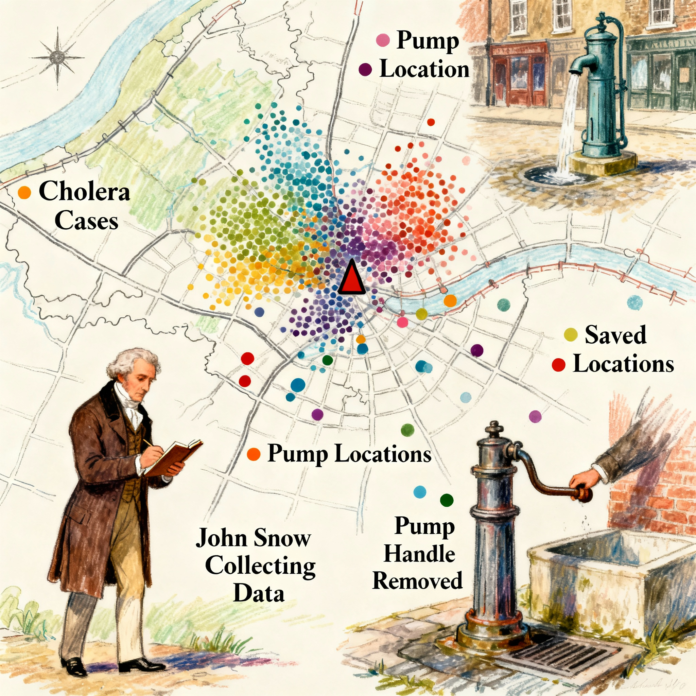

Introduction¶
In this notebook, we’ll journey through the true story behind John Snow’s famous cholera map. Often celebrated as the birth of modern epidemiology, the reality is far more complex. Through text, images, and data visualizations, we’ll uncover the deeper context behind Snow’s investigation and reveal why the legend is only part of the truth.
John Snow's Cholera Map¶

Dr. John Snow (1813–1858) was a key figure in epidemiology and public health. He used maps to show that cholera deaths in London’s 1854 Soho outbreak were linked to contaminated water, challenging the dominant miasma theory. His innovative approach reshaped how diseases were understood and continues to influence geography, data science, and modern data visualization.

import pandas as pd
import folium
import plotly.express as px
from geopy.distance import geodesic
from folium.plugins import HeatMap
from shapely.geometry import Point, Polygon
We are loading data of Deaths, Pump and we have data of death_count, latitue and longitude.
deaths = pd.read_csv('deaths.csv')
pumps = pd.read_csv('pumps.csv')
deaths.head()
| death_count | latitude | longitude | |
|---|---|---|---|
| 0 | 1 | 51.513418 | -0.137930 |
| 1 | 1 | 51.513418 | -0.137930 |
| 2 | 1 | 51.513418 | -0.137930 |
| 3 | 1 | 51.513361 | -0.137883 |
| 4 | 1 | 51.513361 | -0.137883 |
The analysis reveals that most deaths were concentrated near certain water pumps, showing how proximity played a critical role in the outbreak.
# Function to find the nearest pump for a given death location
def find_nearest_pump(death_location, pumps):
min_distance = float('inf')
nearest_pump = None
for _, pump in pumps.iterrows():
pump_location = (pump['latitude'], pump['longitude'])
distance = geodesic(death_location, pump_location).meters
if distance < min_distance:
min_distance = distance
nearest_pump = pump['pump_name']
return nearest_pump
# Assign each death to the nearest pump
deaths['nearest_pump'] = deaths.apply(
lambda row: find_nearest_pump((row['latitude'], row['longitude']), pumps), axis=1
)
# Count deaths per pump
death_counts = deaths['nearest_pump'].value_counts().reset_index()
death_counts.columns = ['Pump', 'Death Count']
# --- Pie Chart ---
fig_pie = px.pie(
death_counts,
names='Pump',
values='Death Count',
title='Distribution of Deaths Among Nearest Pumps'
)
fig_pie.show()
This Bar chart represents the comparison of Number of Deaths per Pumps.
# --- Bar Chart ---
fig_bar = px.bar(
death_counts,
x='Pump',
y='Death Count',
title='Number of Deaths per Pump',
labels={'Death Count': 'Number of Deaths'}
)
fig_bar.show()
Now we have to have to locate the deaths cordinates and pump cordinates on Map, So we are taking Latitue and Longitutde colums form both CSV Files.
# Create 'locations' variables by subsetting only Latitude and Longitude from the datasets
locations_deaths = deaths[['latitude', 'longitude']]
locations_pumps = pumps[['latitude', 'longitude']]
# Transform the dataframes to list of lists
deaths_list = locations_deaths[['latitude', 'latitude']].values.tolist()
pumps_list = locations_pumps[['latitude', 'latitude']].values.tolist()
Now, we are using Foilum and branca package to import Map.
from folium.plugins import MarkerCluster, HeatMap
from branca.element import Template, MacroElement
deaths = pd.read_csv("deaths.csv")
pumps = pd.read_csv("pumps.csv")
map_center = [deaths['latitude'].mean(), deaths['longitude'].mean()]
cholera_map = folium.Map(location=map_center, zoom_start=16, tiles='CartoDB positron')
cholera_map
We are only taking death data and making density map.
# Load the deaths data
deaths_df = pd.read_csv("deaths.csv")
# Center the map around the average location of deaths
center_lat = deaths_df['latitude'].mean()
center_lon = deaths_df['longitude'].mean()
base_map = folium.Map(location=[center_lat, center_lon], zoom_start=16)
# Prepare heatmap data
heat_data = deaths_df[['latitude', 'longitude']].values.tolist()
# Add heatmap layer (death density)
HeatMap(heat_data, radius=15).add_to(base_map)
base_map
In density, we can't able to see the numebers properly of deaths, so we are using clustering to make data more visible to human eye.
# -------------------------------
# Task 3: Cluster death locations with color styling
# -------------------------------
marker_cluster = MarkerCluster(name='Cholera Deaths').add_to(cholera_map)
for _, row in deaths.iterrows():
folium.CircleMarker(
location=[row['latitude'], row['longitude']],
radius=4,
color='darkred',
fill=True,
fill_color='orange',
fill_opacity=0.6,
popup="Cholera Death"
).add_to(marker_cluster)
cholera_map
Now, adding pump location on map, As John Snow find that "Cholera" is spreading from this Pump.
# -------------------------------
# Add pump markers with custom icons and popups
# -------------------------------
for _, row in pumps.iterrows():
folium.Marker(
location=[row['latitude'], row['longitude']],
popup=folium.Popup(f"<b>Pump Name:</b> {row['pump_name']}<br><i>Suspected source of outbreak</i>", max_width=200),
icon=folium.Icon(color='black', icon='tint', prefix='fa')
).add_to(cholera_map)
cholera_map
Now, we are combining all the complex data, So we can undersatnd easily by revealing patterns, trends, and insights quickly and clearly.
# -------------------------------
# Task 4: Heatmap visualization with creative gradient
# -------------------------------
heat_data = deaths[['latitude', 'longitude']].values.tolist()
HeatMap(
heat_data,
radius=15,
blur=10,
gradient={0.2: 'blue', 0.4: 'lime', 0.6: 'yellow', 0.8: 'orange', 1: 'red'}
).add_to(cholera_map)
# -------------------------------
# Add a legend for storytelling
# -------------------------------
legend_html = """
{% macro html(this, kwargs) %}
<div style="
position: fixed;
bottom: 50px; left: 50px; width: 250px; height: 150px;
background-color: white;
border:2px solid grey;
z-index:9999;
font-size:14px;
padding: 10px;
">
<b>Cholera Map</b><br>
<i style="color:black;">⬤</i> Water Pump<br>
<i style="color:Orange;">⬤</i> Cholera Death (Clustered)<br>
<i style="color:red;">⬤</i> High Death Density<br>
<i style="color:blue;">⬤</i> Low Death Density<br>
<i style="color:green;">⬤</i> Brewery Shore<br>
<i style="color:red;">⬤</i> Open House<br>
</div>
{% endmacro %}
"""
legend = MacroElement()
legend._template = Template(legend_html)
cholera_map.get_root().add_child(legend)
styleBrewery = {'fillColor':"Green" , 'color': 'green'}
styleWorkHouse = {'fillColor': "red", 'color': 'red'}
workHouseOutline = 'https://raw.githubusercontent.com/Fuenfgeld/DatamanagementAndArchiving/main/GeoCodingTutorial/workHouse.geojson'
breweryOutline = 'https://raw.githubusercontent.com/Fuenfgeld/DatamanagementAndArchiving/main/GeoCodingTutorial/brewery.geojson'
folium.GeoJson(breweryOutline, name="geojson",style_function=lambda x: styleBrewery ).add_to(cholera_map)
folium.GeoJson(workHouseOutline, name="geojson",style_function=lambda x: styleWorkHouse ).add_to(cholera_map)
folium.LayerControl().add_to(cholera_map)
cholera_map

John Snow Cholera Map¶
- Cholera Disease.
- Location Of pump from which Disease is spreading.
- 2 Locations (Most people unaffected)
- Brewery Store (Workers used to drink beer.)
- Open House (They have their own Well.)
- John Snow Collecting data and converting complex data into visualisation.
- John Snow removing main pump.